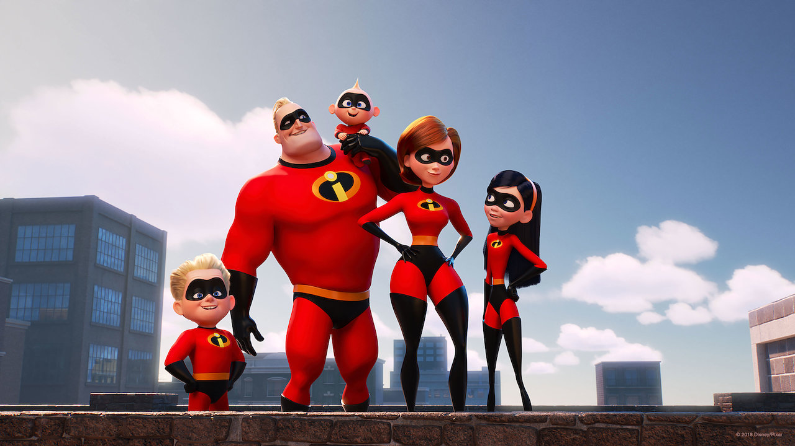

Elastigirl/Helen Parr/Mrs. Incredible
Helene Parr, also known as Elastigirl or Mrs. Incredible, is a fictional character who appears in Pixar's animated superhero film The Incredibles and its sequel Incredibles 2.
The Parr family
Elastigirl's Abilities
- She can stretch her body and limbs.
- She can shapeshift, thanks to her elasticity.
- She's a licensced pilot.
Elastigirl's Family
Elastigirl is married to Mr. Incredible, and they have three children together. Click on the links below to read more about the Parr family: